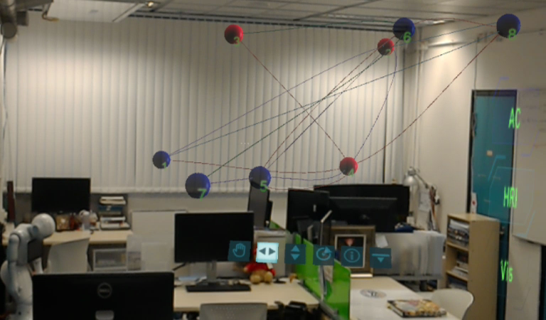

Scales in AR
Room-scale of the laboratory scene
Table-scale of the laboratory scene
Room-scale of the office scene
Table-scale of the office scene
Real-time screenshots of the virtual visualization model augmented on physical objects during exploration in the AR context, captured through Microsoft HoloLens. (a) is the room-scale of the laboratory scene; (b) is the room-scale of the office scene; (c) is the table-scale of the laboratory scene; (d) is the table-scale of the office scene.
Users’ spatial preferences and exploratory behaviors
The schematic diagram for spatial relationships identified through video coding. These four diagrams show the participants explored the virtual visualization model in (a) figurative; (b) vista; (c) panoramic; (d) mixed space separately.
User Behavior Analysis
Percentage (with standard error) of time spent in each spatial arrangement based on video coding. ***: p <= 0.001; **: p < 0.05; *: 0.05 <= p < 0.1.
Figurative space
Panoramic space
Vista space
Mixed space
Heatmap of the duration spent in the room-scale (left on each figure) and table-scale (right on each figure) based on participants’ movement trajectories captured in video recordings. Plots are arranged by the primary spatial relationship adopted, i.e., (a) figurative space; (b) vista space; (c) panoramic space; (d) mixed space.